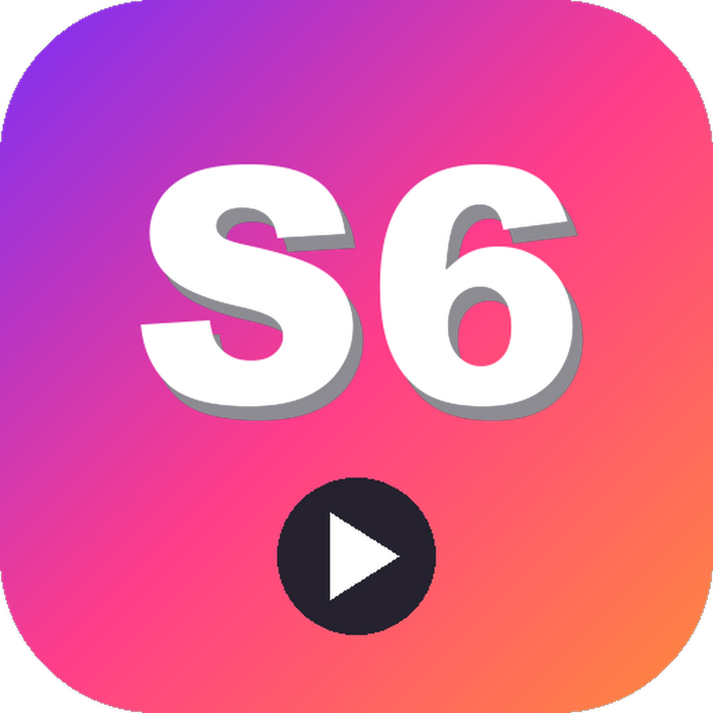

Shorts6GTA
Shorts6GTA is a gaming channel that publishes short, subtitled highlight clips of GTA 6 live streams (Brazilian and international streamers, with Portuguese subtitles) on YouTube, Instagram and TikTok.
Shorts6GTA Postagem is our internal tool: a desktop app used only by the channel owner to schedule and publish our own clips to our own accounts. It is not offered to other users.
How it works with TikTok: the owner signs in with TikTok (Login Kit), and when an approved clip reaches its scheduled time, the app uploads the video to the owner's own TikTok account through the Content Posting API.
YouTube: @Shorts6GTA
Português: Shorts6GTA é um canal de cortes de lives de GTA 6. O "Shorts6GTA Postagem" é a ferramenta interna do dono do canal para agendar e publicar os próprios cortes nas próprias contas.